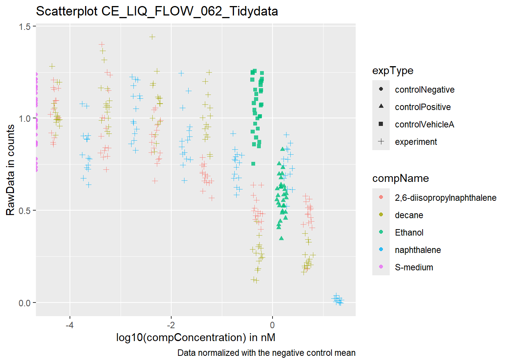

C. elegans experiment
The data for this exercise was kindly supplied by J. Louter (INT/ILC) and was derived from an experiment in which adult C.elegans nematodes were exposed to varying concentrations of different compounds.
First we load in the dataset.
library(readxl)
CE_LIQ_FLOW_062_Tidydata <- read_excel("~/CE.LIQ.FLOW.062_Tidydata.xlsx")
head(CE_LIQ_FLOW_062_Tidydata)
## # A tibble: 6 × 34
## plateRow plateColumn vialNr dropCode expType expReplicate expName
## <lgl> <lgl> <dbl> <chr> <chr> <dbl> <chr>
## 1 NA NA 1 a experiment 3 CE.LIQ.FLOW.062
## 2 NA NA 1 b experiment 3 CE.LIQ.FLOW.062
## 3 NA NA 1 c experiment 3 CE.LIQ.FLOW.062
## 4 NA NA 1 d experiment 3 CE.LIQ.FLOW.062
## 5 NA NA 1 e experiment 3 CE.LIQ.FLOW.062
## 6 NA NA 2 a experiment 3 CE.LIQ.FLOW.062
## # ℹ 27 more variables: expDate <dttm>, expResearcher <chr>, expTime <dbl>,
## # expUnit <chr>, expVolumeCounted <dbl>, RawData <dbl>, compCASRN <chr>,
## # compName <chr>, compConcentration <chr>, compUnit <chr>,
## # compDelivery <chr>, compVehicle <chr>, elegansStrain <chr>,
## # elegansInput <dbl>, bacterialStrain <chr>, bacterialTreatment <chr>,
## # bacterialOD600 <dbl>, bacterialConcX <dbl>, bacterialVolume <dbl>,
## # bacterialVolUnit <chr>, incubationVial <chr>, incubationVolume <dbl>, …
You would expect the columns RawData, compName and compConcentration all to be numeric. These are the colums we are interested in.
RawData = the outcome - number of offspring counted as an integer value, after incubation time,
compName = the generic name of the compound/chemical
compConcentration = the concentration of the compound
# inspect the data types of colums RawData, compName and compConcentration
class(CE_LIQ_FLOW_062_Tidydata$RawData)
## [1] "numeric"
class(CE_LIQ_FLOW_062_Tidydata$compName)
## [1] "character"
class(CE_LIQ_FLOW_062_Tidydata$compConcentration)
## [1] "character"
But in R the variable compConcentration is not ‘numeric’, it is of the data type ‘character’.
# convert column compConcentration from character to numeric
# Remove NA and convert to numeric
library(dplyr)
CE_LIQ_FLOW_062_Tidydata <- CE_LIQ_FLOW_062_Tidydata %>%
mutate(compConcentration = as.numeric(compConcentration)) %>%
filter(!is.na(compConcentration))
Scatterplot
Scatterplot of the data set for the different compounds and the varying concentrations down below:

Figuur 3. Scatterplot of different compounds and varying concentrations
The positive control for this experiment is ethanol and the negative control is S-medium.
Normalizing the data
For the dataset CE_LIQ_FLOW_062_Tidydata, the controleNegative condition was normalized so that its average value equals 1. All values are expressed as a fraction of this, which helps standardize the data and facilitates the interpretation and comparison of the effects of different conditions.
# Calculate mean value of controlNegative
controlNegative <- CE_LIQ_FLOW_062_Tidydata %>% filter(CE_LIQ_FLOW_062_Tidydata$expType == "controlNegative")
controlNegative_mean <- mean(controlNegative$RawData)
controlNegative_mean
## [1] 85.9
# Normalize data
CE_LIQ_FLOW_062_Tidydata <- CE_LIQ_FLOW_062_Tidydata %>% mutate(normalized = CE_LIQ_FLOW_062_Tidydata$RawData / controlNegative_mean)
# Inspect the data types of columns RawData, compName, expType, compConcentration and normalized
CE_LIQ_FLOW_062_Tidydata %>% select(RawData, compName, compConcentration, expType, normalized)
## # A tibble: 359 × 5
## RawData compName compConcentration expType normalized
## <dbl> <chr> <dbl> <chr> <dbl>
## 1 44 2,6-diisopropylnaphthalene 4.99 experiment 0.512
## 2 37 2,6-diisopropylnaphthalene 4.99 experiment 0.431
## 3 45 2,6-diisopropylnaphthalene 4.99 experiment 0.524
## 4 47 2,6-diisopropylnaphthalene 4.99 experiment 0.547
## 5 41 2,6-diisopropylnaphthalene 4.99 experiment 0.477
## 6 35 2,6-diisopropylnaphthalene 4.99 experiment 0.407
## 7 41 2,6-diisopropylnaphthalene 4.99 experiment 0.477
## 8 36 2,6-diisopropylnaphthalene 4.99 experiment 0.419
## 9 40 2,6-diisopropylnaphthalene 4.99 experiment 0.466
## 10 38 2,6-diisopropylnaphthalene 4.99 experiment 0.442
## # ℹ 349 more rows

Figuur 4. Scatterplot of different compounds and varying concentrations normalized with the mean of the negative control
Article
An, A.Y. et al. (2023) Dynamic gene expression analysis reveals distinct severity phases of immune and cellular dysregulation in COVID-19, bioRxiv. Available at: https://www.biorxiv.org/content/10.1101/2023.11.04.565404v1.full (Accessed: 02 May 2024).
Summary
Objective
To investigate longitudinal changes in gene expression profiles throughout the COVID-19 disease timeline.
Methods
Three-hundred whole blood samples from 128 adult patients were collected during hospitalization from COVID-19, with up to five samples per patient. Transcriptome sequencing (RNA-Seq), differential gene expression analysis and pathway enrichment was performed. Drug-gene set enrichment analysis was used to identify FDA-approved medications that could inhibit critical genes and proteins at each disease phase. Prognostic gene-expression signatures were generated using machine learning to distinguish 3 disease stages.
Results
Samples were longitudinally grouped by clinical criteria and gene expression into six disease phases: Mild, Moderate, Severe, Critical, Recovery, and Discharge. Distinct mechanisms with differing trajectories during COVID-19 hospitalization were apparent. Antiviral responses peaked early in COVID-19, while heme metabolism pathways became active much later during disease. Adaptive immune dysfunction, inflammation, and metabolic derangements were most pronounced during phases with higher disease severity, while hemostatic abnormalities were elevated early and persisted throughout the disease course. Drug-gene set enrichment analysis predicted repurposed medications for potential use, including platelet inhibitors in early disease, antidiabetic medications for patients with increased disease severity, and dasatinib throughout the disease course. Disease phases could be categorized using specific gene signatures for prognosis and treatment selection. Disease phases were also highly correlated to previously developed sepsis endotypes, indicating that severity and disease timing were significant contributors to heterogeneity observed in sepsis and COVID-19.
Conclusions
Higher temporal resolution of longitudinal mechanisms in COVID-19 revealed multiple immune and cellular changes that were activated at different phases of COVID-19. Understanding how a patient’s gene expression profile changes over time can permit more accurate risk stratification of patients and provide time-dependent personalized treatments with repurposed medications. This creates an opportunity for timely intervention before patients transition to a more severe phase, potentially accelerating patients to recovery.
Review
The article has been evaluated according to the criteria listed in the table below.
| Study Purpose |
A concise statement in the introduction of the article, often in the last paragraph, that establishes the reason the research was conducted. Also called the study objective. |
yes |
|
|
| Data Availability Statement |
A statement, in an individual section offset from the main body of text, that explains how or if one can access a study’s data. The title of the section may vary, but it must explicitly mention data; it is therefore distinct from a supplementary materials section. |
yes |
|
|
| Data Location |
Where the article’s data can be accessed, either raw or processed. |
The datasets generated for this study can be found on GEO: GSE221234 and GSE222253. Code is available upon request (Dr. Robert Hancock, bob{at}hancocklab.com). |
|
|
| Study Location |
Author has stated in the methods section where the study took place or the data’s country/region of origin. |
yes, |
|
|
| Author Review |
The professionalism of the contact information that the author has provided in the manuscript. |
yes, with information of the researchers and an e-mail. |
|
|
| Ethics Statement |
A statement within the manuscript indicating any ethical concerns, including the presence of sensitive data. |
yes |
|
|
| Funding Statement |
A statement within the manuscript indicating whether or not the authors received funding for their research. |
yes |
|
|
| Code Availability |
Authors have shared access to the most updated code that they used in their study, including code used for analysis. |
no |
|
|